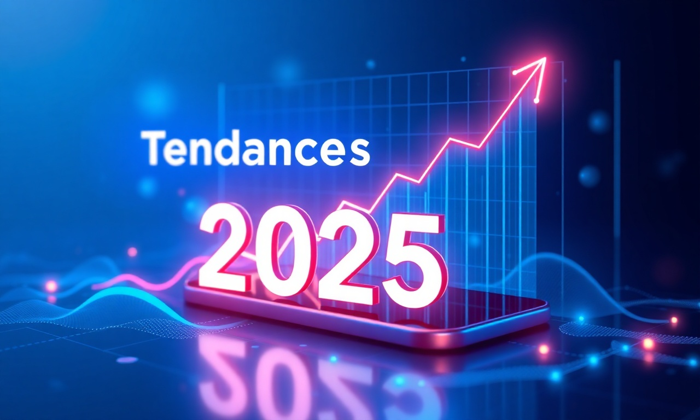
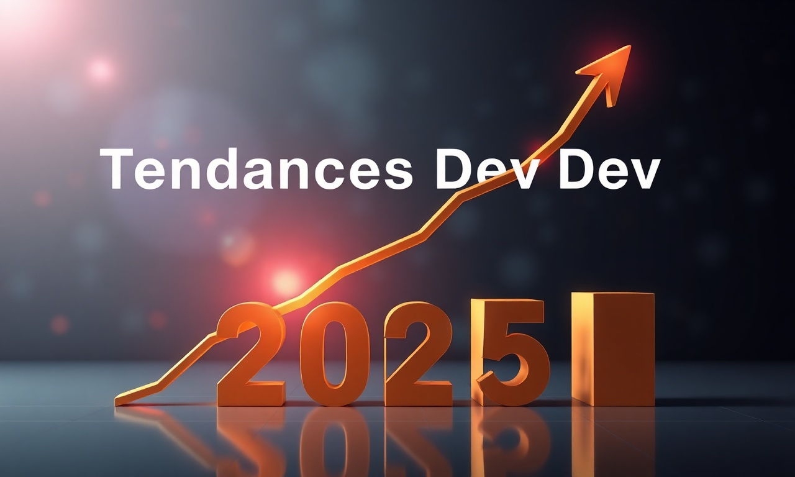

Introduction
Le développement web et mobile évolue à un rythme effréné, et 2025 s'annonce comme une année charnière pour les entreprises marocaines. Chez DatRey, agence digitale basée à Casablanca, nous suivons de près ces tendances pour vous offrir des solutions innovantes. Que vous cherchiez à créer une application mobile performante ou un site web moderne, cet article vous guide à travers les innovations clés. Découvrez comment l'IA, les Progressive Web Apps (PWA) et les frameworks comme Next.js ou Flutter redéfinissent les standards. Prêt à booster votre présence digitale ?
1. L'IA au Cœur du Développement
L'intelligence artificielle (IA) n'est plus une option, c'est une nécessité. En 2025, les outils d'IA générative (comme GitHub Copilot) et les API de machine learning s'intègrent nativement dans les projets web et mobile. Au Maroc, les entreprises adoptent ces technologies pour automatiser des tâches, personnaliser l'expérience utilisateur et optimiser les performances.
1.1. Chatbots et Assistants Vocaux
Les chatbots alimentés par l'IA (GPT-4, Claude) offrent un support client 24/7. Pour une application mobile, intégrer un assistant vocal améliore l'accessibilité. DatRey peut vous aider à déployer ces solutions sur mesure.
1.2. Personnalisation Dynamique
Grâce à l'IA, les sites web adaptent leur contenu en temps réel selon le comportement de l'utilisateur. Résultat : un taux de conversion accru. Selon une étude, 72% des consommateurs marocains préfèrent les marques qui offrent une expérience personnalisée.
2. Progressive Web Apps (PWA) : Le Standard Mobile
Les PWA combinent le meilleur du web et des applications natives. En 2025, elles deviennent le choix privilégié pour les entreprises marocaines souhaitant offrir une expérience rapide et engageante sans passer par les stores. Performantes, fiables et installables, elles réduisent les coûts de développement.
- Avantages : temps de chargement instantané, fonctionnement hors ligne, notifications push.
- Exemple : une PWA e-commerce peut augmenter les ventes de 20%.
3. Frameworks Modernes : Next.js, Flutter et React Native
Les frameworks évoluent pour répondre aux exigences de performance et de scalabilité. Next.js (pour le web) et Flutter/React Native (pour le mobile) dominent le marché.
| Framework | Usage | Avantage clé |
|---|---|---|
| Next.js | Web (SSR, SSG) | SEO optimisé, performances |
| Flutter | Mobile (iOS/Android) | UI cohérente, hot reload |
| React Native | Mobile | Code partagé, large communauté |
Pour un projet au Maroc, choisir le bon framework dépend de vos objectifs. DatRey maîtrise ces technologies et vous conseille.
4. Cybersécurité et RGPD Maroc
Avec la digitalisation, la sécurité est primordiale. En 2025, les réglementations (Loi 09-08) imposent des normes strictes. Les développeurs intègrent dès la conception des mesures comme l'authentification multifacteur, le chiffrement de bout en bout et les audits réguliers.
- Statistique : 60% des PME marocaines ont subi une cyberattaque en 2024.
- Conseil : optez pour un hébergement sécurisé et des mises à jour régulières.
5. Low-Code et No-Code : Accessibilité
Les plateformes low-code/no-code (Bubble, Webflow) permettent de créer des applications sans compétences techniques poussées. Idéal pour les startups marocaines avec des budgets limités. Cependant, pour des projets complexes, le développement sur mesure reste recommandé.
6. Web3 et Blockchain
La blockchain trouve des applications concrètes : traçabilité, smart contracts, NFT. Au Maroc, le secteur financier explore ces technologies. DatRey peut vous aider à intégrer des solutions décentralisées dans votre projet.
7. Performance et Green IT
Les utilisateurs exigent des sites rapides (moins de 2 secondes de chargement). Parallèlement, l'éco-conception web réduit l'empreinte carbone. Optimisez les images, utilisez un hébergement vert et minimisez le code.
FAQ
Quelles sont les tendances majeures en développement web pour 2025 ?
Les tendances incluent l'IA intégrée, les PWA, les frameworks modernes (Next.js, Flutter), la cybersécurité renforcée, le low-code, la blockchain et l'éco-conception.
Comment choisir entre une application native et une PWA ?
Si vous avez besoin de fonctionnalités avancées (capteurs, stockage local), choisissez une app native. Pour une solution économique et rapide, la PWA est idéale. DatRey vous aide à évaluer vos besoins.
DatRey propose-t-il des services de développement web et mobile au Maroc ?
Oui, en tant qu'agence digitale à Casablanca, nous offrons des services de développement sur mesure, du conseil à la maintenance. Contactez-nous pour un devis.
Conclusion
Les tendances 2025 offrent des opportunités uniques pour les entreprises marocaines. Que vous souhaitiez adopter l'IA, lancer une PWA ou sécuriser votre application, DatRey est votre partenaire de confiance à Casablanca. Découvrez nos services SEO pour optimiser votre visibilité, ou nos campagnes Google Ads pour booster votre trafic. Contactez-nous dès aujourd'hui pour concrétiser votre projet.



Besoin d'accompagnement ?
Les experts DatRey vous aident à atteindre vos objectifs digitaux au Maroc.
Demander un audit gratuit →